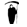

- 1. SEE A TWEEPTo start, we'll show you one person that you're following on Twitter.
- 2.  KILL OR KEEPYou get to decide whether to keep following them or to unfollow them.
- 3.Keep doing this until you're only following people that matter to you.
 RINSE AND REPEAT
RINSE AND REPEAT